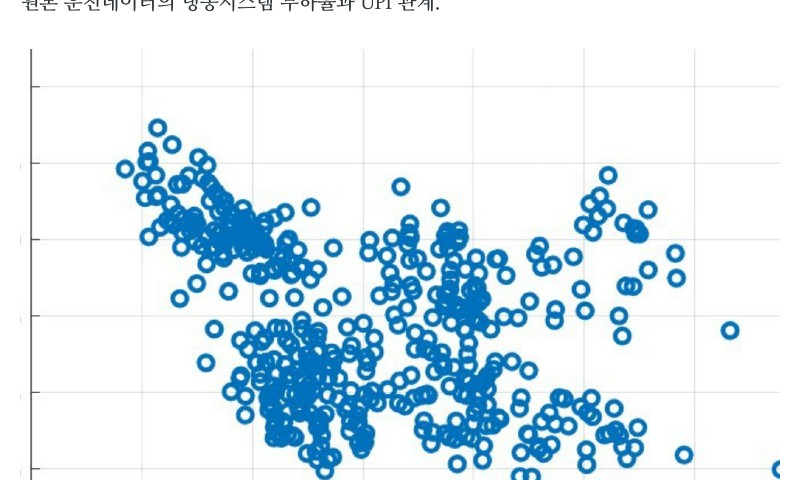

데이터로 찾는 산업·건물 에너지절감 실무 — 61쪽
CASE 12 | DEEP DIVE — 냉동·공조·압축공기 통합 운전데이터 분석 계절별 및 1 분 단위 데이터를 이용해 냉동·공조·압축공기를 하나의 Utility 포트폴리오로 분석한 사례다. 냉동은 COP·UPI·가동대수, 공조는 필터차압· 외기댐퍼, 압축공기는 유량·전력·토출압력·Loading/Unloading 을 함께 본 다. Utility 기준 에너지사용량 10,403,571 kWh/년, 제안단계 절감잠재량 444,832 kWh/년, 약 4.3%. 냉동시스템 평균 UPI 약 0.84 kWh/RT, COP 약 4.20, 평균 부하율 약 55%. 냉동기 실제 평균 가동대수 약 2.1 대, 부하 기준 필요대수 약 1.2 대 — 약 0.9 대의 여유가 관찰됨. 압축공기 월평균 UPI 약 0.126 kWh/m³, 평균 시스템 손실 약 3.1%, 순간 최 대 손실 31.7%. 그림 12-1. 원본 운전데이터의 냉동시스템 부하율과 UPI 관계. [S04] 원본 운전데이터 분석자료 를 비식별 형태로 복원.

인쇄본 기준 p. 61